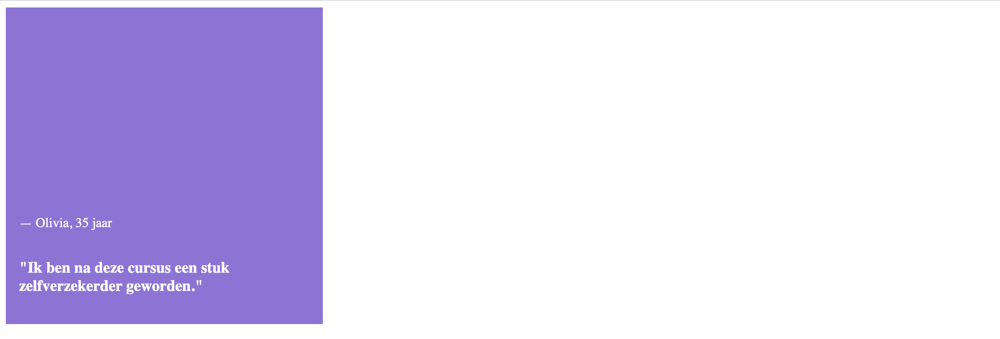
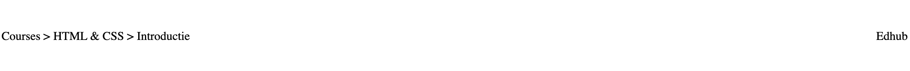
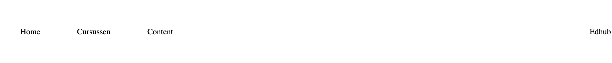
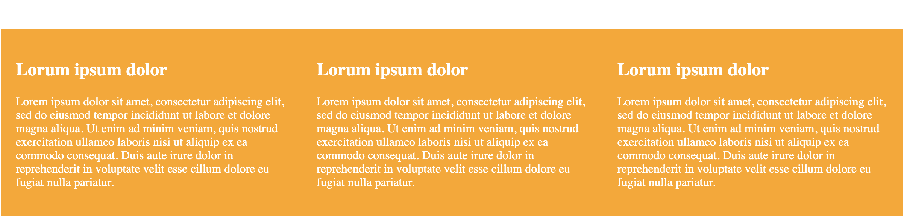
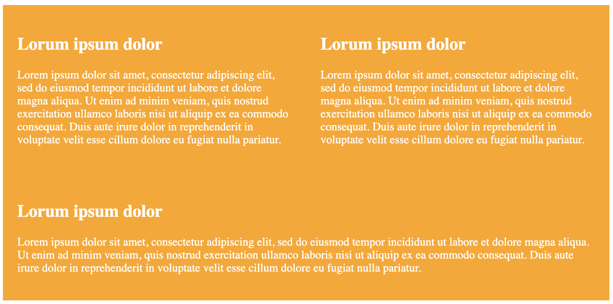

In index.html vindt je de HTML voor de opdracht. Denk eraan:
Verander niets in de html behalve het toevoegen van een class of id-attribuut als je dat nodig vindt.
Alle div-tags hebben een class naam die overeenkomt met het opdrachtnummer.
Je kunt voor het gemak de andere HTML-elementen uit-commentarieren als je met een specifieke opdracht bezig bent.
In styles.css staat de basis-styling voor deze opdracht. Deze mag je niet veranderen. Jouw css schrijf je in flexbox.css!
* Houd er rekening mee dat de body 1200px breed is.
Weet je niet meer welke properties er ook alweer waren? Gebruik dan deze bron.
Zorg dat het paarse review-blok er zo uit komt te zien door flexbox te gebruiken:

Zorg dat de <div class="two"> er zo uit komt te zien door flexbox te gebruiken:

Zorg dat de <div class="three"> er zo uit komt te zien door flexbox te gebruiken:

Zorg dat het login-blok er zo uit komt te zien door flexbox te gebruiken:
Zorg dat de layout van de gele blokken er zo uit komt te zien door flexbox te gebruiken. Elk blok heeft een minimale breedte van 1/3 van het originele scherm van 1200px. Let op: er zit ook nog padding op.

Als het scherm kleiner wordt, willen we dat de blokken op de volgende regel wrappen zodra ze niet meer passen:
